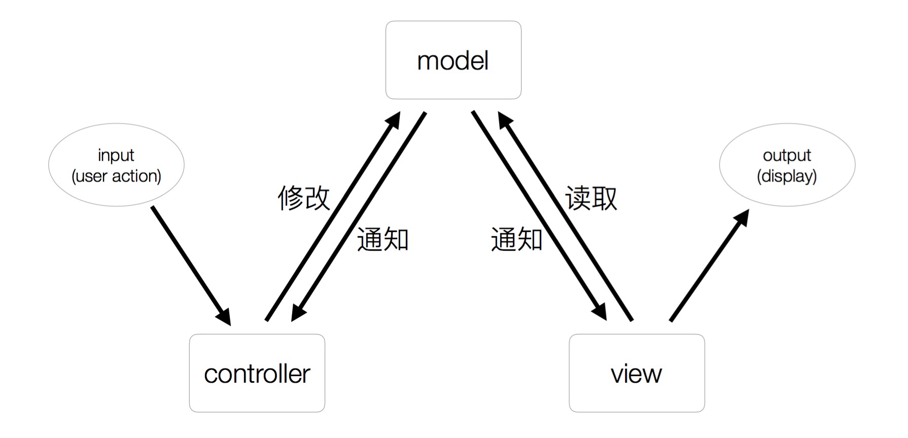
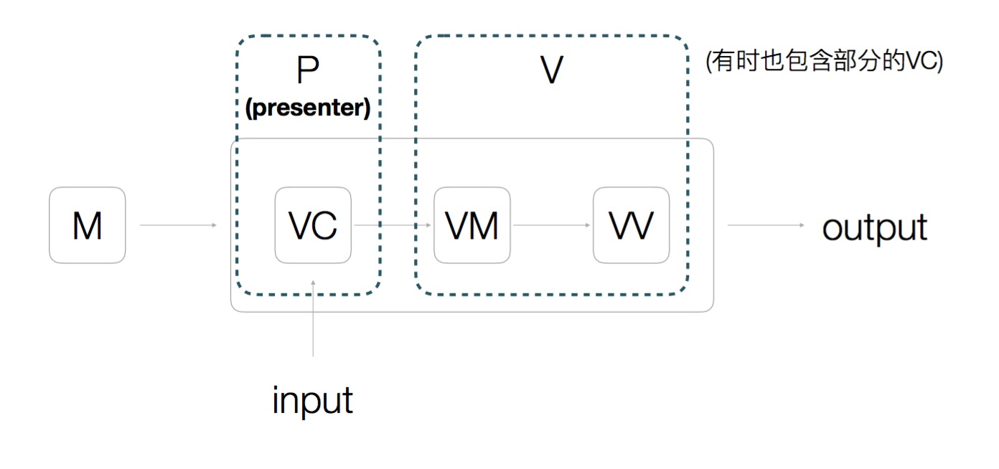
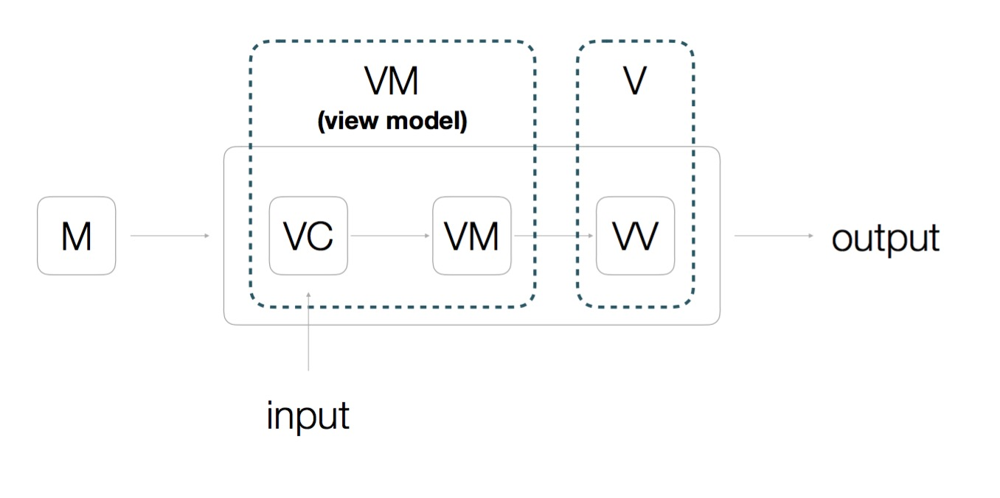

MVC的思考
一直对于MVC这个概念比较模糊，虽然不停地在各种场合听到，但是一直缺乏理解，在勐喆的指导下，终于有了一定的理解，在这里记录下。
传统的MVC

其实传统的MVC其实很好理解，我们可以把它当做是一条单向的流动。就是从input到controller到model到view再到output。
但是图中还有两根线，一条从model传向controller，一条是view从controller拉取这两条线比较让人费解。其实前一条是model的变化可能会导致controller的行为发生改变。后一条则是model与view之间的实现方式，这条线其实就是拉模式。一般拉模式其实是比较顺畅的，如果是推模式的话，会存在不确定推多少数据适合的情况。
MVP
其实在传统中，M和C其实都是后端的，前端只是一个View层。但是随着富前端化，V的功能开始变大。如下图：

V中的VC被独立出来，作为presenter。VM和VV绑在了一起成为了新的V。这就是MVP模式。
MVVM
MVVM其实就是个MVP的变种，如下图：

MVVM是VC和VM绑在了一起，VV只起到了一个简单的V功能。很多人觉得MVVM和MVP的区别在于MVVM中V和M是通过VM相互同步的，而MVP中虽然也是通过V同步，但是MVVM是所谓的自动的。但是其实这只是他们之间很小的区别。他们真正的区别应该是VM到底与哪个靠的更近一些。
Angular属于哪种？
Angular的作者号称他是MVVM，但是其实Angular只是一个VMM，他并没有M层。他的VC与VM之间更贴近，并且恰巧也提供了所谓的双向绑定的功能。
React属于什么？
React的官方文档说他是V层，这一点是对的，如果问他到底是属于MVC还是MVP还是MVVM，答案其实是他并不是任何一个。
我们写Component的时候，如果单独抽出一个Presenter来管理组件之间的状态，那就是MVP。如果所有的逻辑写在组件内部，让VC和VM贴的更近，那就是MVVM。当然了，其实上述的MVP和MVVM都并不真正包含M层。如果想要一个M层，其实得通过接入redux或者flux之类的来作为数据库。
双向绑定算啥
其实这就是个很小的功能。现在的框架其实都是双向绑定的，VM到VV的那层绑定其实都是有的。只不过Angular需要你绑在$scope上，React需要你手动写一遍setState(真正内部的改变框架其实都实现了)。React也提供了所谓的双向绑定插件，其实内部就是封装了setState这一个方法而已。所以双向绑定其实是很小的功能。